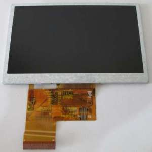
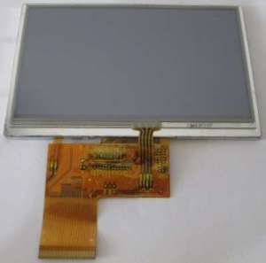
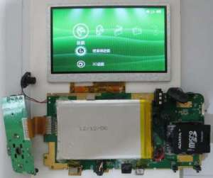
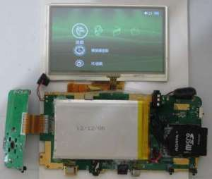
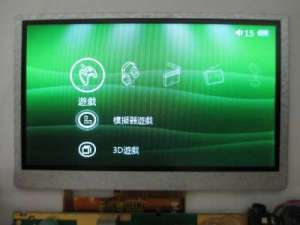
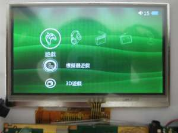
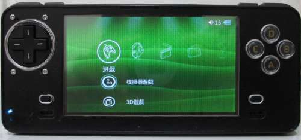

Steward
分享是一種喜悅、更是一種幸福
掌機 - Neo Geo X v370 - 更換觸控螢幕
由於JXD S603掌機是4.3吋屏，剛好被司徒拆解當作零件機，加上S603掌機是電阻屏，司徒心想，如果可以將Neo Geo X掌機改成觸控螢幕，那麼它的可玩性將會大大提升，因此，比對了一下Pinout後，發現一樣都是40Pin腳位，並且背光電源的腳位都是第1、2腳位，因此，司徒抱著燒壞的心情測試，結果竟然可以成功顯示，真是讓司徒相當開心，因為這代表Neo Geo X掌機有機會變成觸控掌機
| Neo Geo X | JXD S603 |
|---|---|
 |  |
 |  |
 |  |
替換完成

雖然目前司徒的Neo Geo X掌機已經具備觸控功能，不過Kernel部份尚未打通，司徒也不確定硬體電路是否有轉換IC，因此，司徒必須繼續研究Kernel部份，期待有一天可以讓Android系統在Neo Geo X掌機身上運行